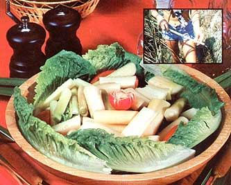

Don't let high food prices get you down. Not when you can hike over to the nearest stream or pond, pick a mess of cattail stems ( or flower heads or roots or shoots), and eat like a king for free!
At one time or another, you've probably noticed cattails sprouting up like exclamation points in nearby streams and/or marshes. You may even have picked some of these distinctive aquatic "weeds" to use in dried floral arrangements. Unless you're a "wild foods" aficionado, however, you may never have eaten (or even heard of) cattail corn, Cossack asparagus, or reed mace flour . . . and you may not have known that the common cattail- Typha latifolia -was prized as a food and fiber plant by both ancient Chinese and Egyptian civilizations.
Few people seem to be aware of it, but the common cattail is actually a highly nutritious and astonishingly versatile source of food. Its stems can be prepared as a vegetable . . . the pollen can be used in bread recipes . . . the plant's distinctive flower spikes can-be cooked like corn . . . the bulbous shoots at the base of the stem are delicious when boiled . . . even the cattail's roots can be processed into a rich (and highly palatable) flour. (Euell Gibbons was probably right when he wrote: "For the number of different kinds of food it produces there is no plant, wild or domesticated, which tops the common cattail.")
What makes T. latifolia a particularly valuable wild food resource, however, is the fact that-unlike many other "forageables"-the cattail [1] grows throughout the U.S. and [2] cannot be mistaken for another plant (or vice versa). Even the novice forager can easily recognize the cattail's slender stalks and distinctive, cigar-shaped flower spikes.
While its true that reed mace (as T. latifolia is sometimes called) can be harvested year round, the delicacy known worldwide as Cossack asparagus is best prepared from two-to three-foot-long shoots gathered in early spring. Simply grab the young plant(s) near the water level and pull. You'll find that you've liberated a section of stem about a foot in length (and left the plant's roots in the ground). Now, if you'll peel back a few layers of "skin" from this stem, you'll soon come to a pale-greenish "core" that can be cooked and eaten just like asparagus. (The dish is absolutely delicious . . . and so much less expensive than "real" asparagus!)
With the arrival of early summer comes another taste treat: cattail corn. To prepare this delicacy, pick the plant's seed heads when they're still in the sheath. Husk off the sheaths, boil the bud-studded heads as you would fresh corn-on-the-cob, then-just before serving-dip the heads in melted butter. You'll find that the flavor is very similar to that of the roasting ears to which the reed mace heads are very closely related.
Eventually, the hot days of summer bring yellow pollen to the cattail's flower spikes . . . pollen that can easily be shaken off into a jar, combined half and half with ordinary wheat flour, and used to make delicious muffins, pancakes, waffles, and other bread items. (Breads made with cattail pollen-you'll find-are not only economical and good-tasting, but eye-pleasing, too . . . the powder adds a warm, yellow color to baked goods.)
Even during the cold winter months, T. latifolia offers foragers a bounty of free nutrition . . . in its roots. You can make a highly satisfactory "all purpose flour" by peeling, drying, and grinding the plant's ropelike roots (and sifting out any residual fibers) . . . or you can cut away the little nodules (which contain the next season's shoots) from the upper part of the root structure and boil 'em. (These nodules make an excellent substitute for rice or potatoes.)
And as if all this weren't enough, the cattail has a number of non-culinary uses, too. Native American tribes, for instance, once used the stalks of the plant to make baskets, mats, and (sometimes) shelters. (They picked the stalks green, hung 'em up to dry, and-in the case of baskets and mats-soaked strips of the material before weaving them into useful items.) Also, early pioneers discovered that kapok-the cotton-like substance that forms on cattail spikes in late summer-could be used as a soft "filler" for pillows, stuffed toys, and mattresses.
No matter how you look at it, then, T. latifolia -the common cattail-is one heck of a versatile "weed"I (There aren't many plants-wild or cultivated-that you can eat, weave with, and sleep on!) Perhaps the many outstanding virtues of this aquatic "super plant" should be better publicized . . . or should we keep the cattail's secret to ourselves?
|
 |
|
|